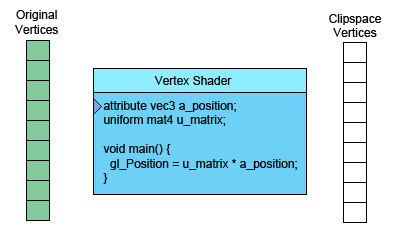

WebGL How It Works
This is a continuation from WebGL Fundamentals. Before we continue I think we need to discuss at a basic level what WebGL and your GPU actually do. There are basically 2 parts to this GPU thing. The first part processes vertices (or streams of data) into clipspace vertices. The second part draws pixels based on the first part.
When you call
gl.drawArrays(gl.TRIANGLE, 0, 9);
The 9 there means "process 9 vertices" so here are 9 vertices being processed.

On the left is the data you provide. The vertex shader is a function you write. It gets called once for each vertex. You do some math and set the special variable “gl_Position” and the GPU takes your result and stores it internally.
Assuming you're drawing TRIANGLES, every time this first part generates 3 vertices the GPU uses them to make a triangle. It figures out which pixels the 3 points of the triangle correspond to, and then rasterizes the triangle which is a fancy word for “draws it with pixels”. For each pixel it will call your fragment shader asking you what color to make that pixel.
That’s all very interesting but as you can see in our examples to up this point the fragment shader has very little info per pixel. Fortunately we can pass it more info. We define “varyings” for each value we want to pass from the vertex shader to the fragment shader.
As a simple example, lets just pass the clipspace coordinates we computed directly from the vertex shader to the fragment shader.
We'll draw with a simple triangle. Continuing from our previous example let's change our F to a triangle.
// Fill the buffer with the values that define a rectangle.
function setGeometry(gl) {
gl.bufferData(
gl.ARRAY_BUFFER,
new Float32Array([
0, -100,
150, 125,
-175, 100]),
gl.STATIC_DRAW);
}
And we have to only draw 3 vertices.
// Draw the scene.
function drawScene() {
...
// Draw the geometry.
gl.drawArrays(gl.TRIANGLES, 0, 3);
}
Then in our vertex shader we declare a varying to pass data to the fragment shader.
varying vec4 v_color;
...
void main() {
// Multiply the position by the matrix.
gl_Position = vec4((u_matrix * vec3(a_position, 1)).xy, 0, 1);
// Convert from clipspace to colorspace.
// Clipspace goes -1.0 to +1.0
// Colorspace goes from 0.0 to 1.0
v_color = gl_Position * 0.5 + 0.5;
}
And then we declare the same varying in the fragment shader.
precision mediump float;
varying vec4 v_color;
void main() {
gl_FragColor = v_color;
}
WebGL will connect the varying in the vertex shader to the varying of the same name and type in the fragment shader.
Here's the working version.
click here to open in a separate window
Move, scale and rotate the rectangle. Notice that since the colors are computed from clipspace they don't move with the rectangle. They are relative to the background.
Now think about it. We only compute 3 vertices. Our vertex shader only gets called 3 times therefore it's only computing 3 colors yet our triangle is many colors. This is why it's called a varying.
WebGL takes the 3 values we computed for each vertex and as it rasterizes the triangle it interpolates between the values we computed for the vertices. For each pixel it calls our fragment shader with the interpolated value for that pixel.
In the example above we start out with the 3 vertices
| Vertices | |
|---|---|
| 0 | -100 |
| 150 | 125 |
| -175 | 100 |
Our vertex shader applies a matrix to translate, rotate, scale and convert to clipspace. The defaults for translation, rotation and scale are translation = 200, 150, rotation = 0, scale = 1,1 so that's really only translation. Given our backbuffer is 400x300 our vertex shader applies the matrix and then computes the following 3 clipspace vertices.
| values written to gl_Position | ||
|---|---|---|
| 0.000 | 0.660 | |
| 0.750 | -0.830 | |
| -0.875 | -0.660 | |
It also converts those to colorspace and writes them to the varying v_color that we declared.
| values written to v_color | ||
|---|---|---|
| 0.5000 | 0.750 | 0.5 |
| 0.8750 | 0.915 | 0.5 |
| 0.0625 | 0.170 | 0.5 |
Those 3 values written to v_color are then interpolated and passed to the fragment shader for each pixel.
We can also pass in more data to the vertex shader which we can then pass on to the fragment shader. So for example lets draw a rectangle, that consists of 2 triangles, in 2 colors. To do this we'll add another attribute to the vertex shader so we can pass it more data and we'll pass that data directly to the fragment shader.
attribute vec2 a_position;
attribute vec4 a_color;
...
varying vec4 v_color;
void main() {
...
// Copy the color from the attribute to the varying.
v_color = a_color;
}
We now have to supply colors for WebGL to use.
// look up where the vertex data needs to go.
var positionLocation = gl.getAttribLocation(program, "a_position");
var colorLocation = gl.getAttribLocation(program, "a_color");
...
// Create a buffer for the colors.
var buffer = gl.createBuffer();
gl.bindBuffer(gl.ARRAY_BUFFER, buffer);
gl.enableVertexAttribArray(colorLocation);
gl.vertexAttribPointer(colorLocation, 4, gl.FLOAT, false, 0, 0);
// Set the colors.
setColors(gl);
...
// Fill the buffer with colors for the 2 triangles
// that make the rectangle.
function setColors(gl) {
// Pick 2 random colors.
var r1 = Math.random();
var b1 = Math.random();
var g1 = Math.random();
var r2 = Math.random();
var b2 = Math.random();
var g2 = Math.random();
gl.bufferData(
gl.ARRAY_BUFFER,
new Float32Array(
[ r1, b1, g1, 1,
r1, b1, g1, 1,
r1, b1, g1, 1,
r2, b2, g2, 1,
r2, b2, g2, 1,
r2, b2, g2, 1]),
gl.STATIC_DRAW);
}
And here's the result.
click here to open in a separate window
Notice that we have 2 solid color triangles. Yet we're passing the values in a varying so they are being varied or interpolated across the triangle. It's just that we used the same color on each of the 3 vertices of each triangle. If we make each color different we'll see the interpolation.
// Fill the buffer with colors for the 2 triangles
// that make the rectangle.
function setColors(gl) {
// Make every vertex a different color.
gl.bufferData(
gl.ARRAY_BUFFER,
new Float32Array(
[ Math.random(), Math.random(), Math.random(), 1,
Math.random(), Math.random(), Math.random(), 1,
Math.random(), Math.random(), Math.random(), 1,
Math.random(), Math.random(), Math.random(), 1,
Math.random(), Math.random(), Math.random(), 1,
Math.random(), Math.random(), Math.random(), 1]),
gl.STATIC_DRAW);
}
And now we see the interpolated varying.
click here to open in a separate window
Not very exciting I suppose but it does demonstrate using more than one attribute and passing data from a vertex shader to a fragment shader. If you check out the image processing examples you'll see they also use an extra attribute to pass in texture coordinates.
Before we move on just one more thing.
What do these buffer and attibute commands do?
Buffers are the way of getting vertex and other per vertex data onto the
GPU. gl.createBuffer creates a buffer.
gl.bindBuffer sets that buffer as the buffer to be worked on.
gl.bufferData copies data into the buffer.
Once the data is in the buffer we need to tell WebGL how to get data out of it and provide it to the vertex shader's attributes.
To do this, first we ask WebGL what locations it assigned to the attributes. For example in the code above we have
// look up where the vertex data needs to go. var positionLocation = gl.getAttribLocation(program, "a_position"); var colorLocation = gl.getAttribLocation(program, "a_color");
Once we know the location of the attribute we then issue 2 commands.
gl.enableVertexAttribArray(location);
This command tells WebGL we want to supply data from a buffer.
gl.vertexAttribPointer(
location,
numComponents,
typeOfData,
normalizeFlag,
strideToNextPieceOfData,
offsetIntoBuffer);
And this command tells WebGL to get data from the buffer that's was last bound with gl.bindBuffer, how many components per vertex (1 - 4), what the type of data is (BYTE, FLOAT, INT, UNSIGNED_SHORT, etc...), the stride which means how many bytes to skip to get from one piece of data to the next piece of data, and an offset for how far into the buffer our data is.
Number of components is always 1 to 4.
If you are using 1 buffer per type of data then both stride and offset can always be 0. 0 for stride means "use a stride that matches the type and size". 0 for offset means start at the beginning of the buffer. Setting them to values other than 0 is more complicated and though it has some benefits in terms of performance it's not worth the complication unless you are trying to push WebGL to its absolute limits.
I hope that clears up buffers and attributes.